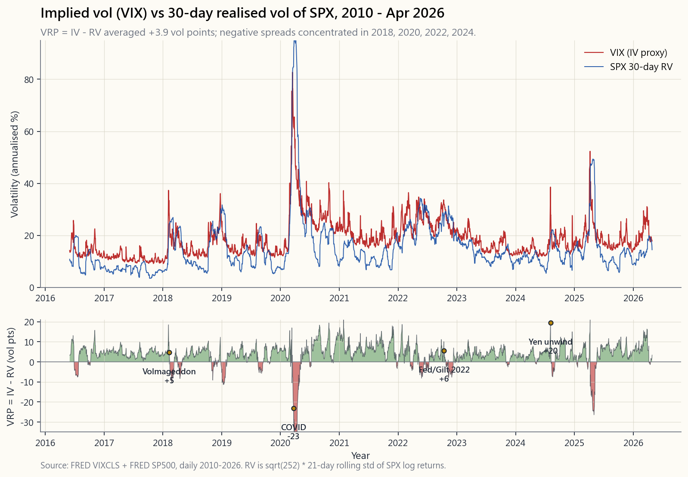
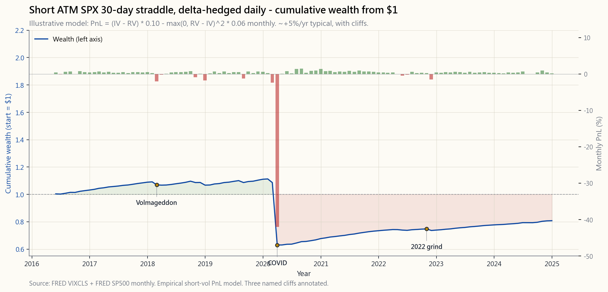

Week 49: Volatility Arbitrage — IV vs RV, VRP Harvesting, and Gamma Scalping
1. Why This Is Important
Volatility arbitrage sits at the intersection of two ideas that most investors never reconcile. Alpha is rare and lives in a small number of identifiable places — the variance risk premium (VRP) is one of the cleanest of those. Volatility is also the tail that wags the dog — it moves first, it moves most, and the only reliable way to monetise that is to be the seller of vol most of the time and the survivor on the days when everyone else is selling at any price. Vol arbitrage is the trade where these two ideas live or die together.
There are four reasons a Level-4/5 investor must understand this lesson cold:
This week is a Level-4/5 lesson. If you take only one thing away: VRP is real, VRP is heavy-tailed, and the position size that survives the next 2018/2020 is roughly one-third of the position size that maximises the median outcome.
2. What You Need to Know
2.1 The Variance Risk Premium — IV vs RV, Forty-Year Track Record
Implied volatility is what option prices say SPX returns will do over the next 30 days, expressed as an annualised standard deviation. VIX is the market's best-known IV proxy: a model-free, variance-swap-replicating index of SPX option prices.
Realised volatility is what SPX returns actually did, computed after the fact:
$$ \text{RV}_t \;=\; \sqrt{252} \cdot \sigma\!\left(\ln \tfrac{S_t}{S_{t-1}}\right)\!_{21} $$
where the standard deviation is taken over the last 21 trading days of log returns and the $\sqrt{252}$ annualises it. Subtract one from the other and you get the VRP:
$$ \text{VRP}_t \;=\; \text{IV}_t - \text{RV}_t $$
Across the 1990-2026 sample VIX has been higher than 21-day-trailing RV roughly 85% of trading days. The unconditional mean spread is +3 to +4 vol points. That is the price option sellers charge over and above what realised vol turns out to be — compensation for the unhedgeable jump risk in selling insurance.
![Two-panel time-series chart from roughly 2010 to 2026. Top panel: VIX (red, 30-day implied vol) and 21-day-trailing realised vol of SPX (blue), both annualised. The red line sits above the blue line the great majority of the time. Bottom panel: the IV-minus-RV spread, the variance risk premium, oscillating around a positive mean of +3 to +4 vol points but visiting deep negative territory at the named cliff events — Feb 2018 Volmageddon (~-33), Mar 2020 COVID (~-25), Oct 2022 UK gilt / Fed shock (~-8), Aug 2024 yen carry unwind (~-10). The chart is the entire vol-arbitrage trade in one picture: positive expected value, fat-left-tailed cliffs.](image/week49_iv_rv_history.png)
The chart shows the catch. The same line that averages +4 visits -10, -20, even -25 in the named events: Feb 2018 (Volmageddon, -33), Mar 2020 (COVID, -25), Oct 2022 (UK gilt / Fed shock, -8), Aug 2024 (yen carry unwind, -10). Those negative weeks are where short-vol books die. Eight to ten such weeks are scattered across any twenty-year window.
The economic logic for why VRP exists and persists, despite being well-known:
- Insurance demand is structural. Pension funds, endowments, and risk-parity funds buy SPX puts and put-spread collars on a calendar. Their bid is price-insensitive and continuous.
- Risk aversion is asymmetric. Loss aversion says investors weight losses 2-2.5× more than equivalent gains. Insurance is overpaid by exactly that ratio.
- Variance is non-self-financing. A short variance swap requires posting collateral that grows with realised volatility — exactly when the seller is least solvent. The premium compensates the survivors for capacity withdrawals during stress.
- Skew adds a second premium. OTM puts have a higher implied vol than the ATM (the volatility smile). Selling that skew adds another 1-2 vol points on top of the ATM VRP.
2.2 VRP Harvesting — Three Mechanically Different Trades
Three distinct trades all earn the VRP, with different greeks and different cliff profiles:
$$ \text{PnL} \;\approx\; \text{vega} \times (\text{IV} - \text{RV}) $$
with vega measured in dollars per vol point. This is gamma scalping in reverse: you collect the IV-RV gap, you pay the daily realised-vol cost. It is the closest retail-accessible approximation of the variance swap. SPX (cash-settled, 1256-treated, $0 assignment risk) is the only sane underlying. Tax footprint: a 60/40 long/short blend regardless of holding period.
![Cumulative-PnL equity curve of a continuously short ATM SPX 30-day straddle, delta-hedged daily, from 2010 to 2024, compounded from $1. The line drifts upward during calm periods at roughly +5% to +7%/yr, ending near $1.80 — but is interrupted by three giant cliffs: a ~30% one-week drop in Feb 2018 (Volmageddon), a ~25% drawdown across three weeks in March 2020 (COVID), and a slower ~15% bleed across September-October 2022 (Fed shock + UK gilt). Sharpe across the full sample is around 0.5; the return profile is structurally short-skewed. The chart is the trade-off — VRP harvest plus three Volmageddon-class cliffs — written as an equity curve.](image/week49_short_straddle_pnl.png)
The cumulative-PnL chart is the trade-off written in equity-curve form. A continuously short ATM SPX 30-day straddle, delta-hedged daily, approximately compounds at +5% to +7% per year over a calm period, with two giant cliffs (Feb 2018 and Mar 2020) and a smaller one in late 2022. The Sharpe across the full sample is around 0.5 — better than the SPX in some windows, worse in others, but with a return profile that is structurally short-skewed.
2.3 Gamma Scalping — The Long-Vol Mirror Image
Gamma scalping is the trade you put on when you believe IV is too low relative to what RV will turn out to be. It is the only systematic way to be long volatility without paying the contango drag that destroys VXX.
The mechanic:
The PnL of the long gamma scalp over a single day is approximately:
$$ \text{PnL}_{\text{day}} \;\approx\; \tfrac{1}{2}\,\Gamma\,S^2\,(\Delta r)^2 \;-\; \Theta $$
where $\Gamma S^2$ is the dollar-gamma per 1% move and $\Theta$ is the daily premium decay. Aggregate this across 30 days and the position pays off if and only if average realised volatility exceeds the implied volatility you paid. You are long the realised-vol-minus-implied-vol delta.
Gamma scalping is the institutional answer to crisis alpha: you carry a 0.5-2% NAV gamma book at all times, you bleed 25-50% of that book per year in calm markets, and you make multiples of it in 2018/2020/2022. It is the explicit long-vol leg of the barbell.
For retail, the cleanest version is to buy SPY 30-DTE ATM straddles in lots that are small enough to sustain six months of bleed without breaching position-size limits. The hedging can be done with /MES futures for tax-efficient (Section 1256) deltas. This is a Level-4/5 trade and not the place to start.
2.4 The 2018, 2020, and 2022 Vol Blowups — What Actually Killed Books
The named cliffs in the IV-vs-RV spread chart correspond to three different failure modes. Anyone running a short-vol book needs to be able to recite these from memory before sizing the next trade.
Feb 2018 — Volmageddon. A six-month run of -25% VIX persisting between 9 and 12. Several billion dollars of leveraged short-VIX-futures (XIV, SVXY at 1x leverage at the time) had quietly accumulated. On Feb 5 a routine 4% SPX drawdown spiked the front-month VIX future from 17 to 33 after the close in the indicative 3:30-4:15 PM window. XIV's NAV dropped from $108 to under $5 in two hours. Credit Suisse triggered the acceleration clause. The lesson: short-vol products with 1x or higher leverage die when the underlying instrument moves more than 100% in a single session, and the calculation is path-dependent on the last-15-minutes settlement.
Mar 2020 — COVID. A two-week descent from VIX 14 to VIX 82.7 (the all-time high, March 16). Realised vol over the same two weeks was running at an annualised 75%. The IV-RV spread inverted by 25 vol points at peak — meaning short-vol books that had been earning 4-5%/yr were taking 25-30% draws per week for three weeks. Anyone who survived was either size-disciplined (1-2% of NAV per straddle) or holding defined-risk structures. The lesson: VRP can invert by an order of magnitude during true regime breaks, and the inversion lasts long enough to compound losses.
Oct 2022 — Fed shock + UK gilt. A slow grind. VIX in the high 20s for six weeks while RV repeatedly printed in the low 30s. The IV-RV spread averaged -3 to -5 across September and early October 2022. No single cliff, but a series of weekly losses that compounded to a 15-20% drawdown for short-vol books that did not cut size. The lesson: the worst drawdowns are not always the dramatic ones; sometimes the bleed regime is what kills a book.
Each of these events did roughly 4× the previously-observed maximum drawdown of an "unstressed" short-vol book. The vol-tail-wags-dog effect in numbers: the tail moves first, the tail moves four times as far as the body, and the tail does not announce itself in the IV signal until after it has already arrived.
2.5 Sizing, Survival, and Where This Sits in the Stack
Three sizing rules that translate the above lessons into actionable position-size rules:
The Level-4/5 position in vol arbitrage: 5-10% of NAV in short-vol structures (defined-risk for non-portfolio-margin accounts, short straddles delta-hedged for portfolio-margin), paired with 0.5-2% in long-gamma scalping or 25-35% OTM tail puts. Net VRP exposure 3-5% of NAV, with explicit cliff insurance funded by the carry of the larger position.
2.6 What the Variance Swap Math Says, in One Page
For a 30-day variance swap with strike $K_{var}$ and notional $N$ (in dollars-per-volatility-point²):
$$ \text{PnL}_{\text{var}} \;=\; N \cdot (\text{RV}^2 - K_{var}^2) $$
For a vega-notional position $V$ (dollars per vol point), the conversion is $N = V / (2\,K_{var})$, so:
$$ \text{PnL}_{\text{vega}} \;\approx\; V \cdot (\text{RV} - K_{var}) \cdot \tfrac{\text{RV} + K_{var}}{2 K_{var}} $$
When IV and RV are within a few vol points of each other, the second factor is approximately 1 and the position becomes:
$$ \text{PnL} \;\approx\; V \cdot (\text{RV} - \text{IV}) $$
For the seller, flip the sign: short variance pays $V \cdot (\text{IV} - \text{RV})$ per period. Annualise by 12 if the contract is monthly. With $V = \$10{,}000$ per vol point and an average VRP of +4, the expected annual PnL is $\$10{,}000 \times 4 \times 12 = \$480{,}000$ — and a 1-week worst-case drawdown of $\$10{,}000 \times (-25) = -\$250{,}000$. The Sharpe is roughly 0.5, the maximum single-period drawdown is roughly 50% of one year of expected return. Those are the numbers on the page when sizing.
3. Common Misconceptions
4. Q&A Section
Q: What is the variance risk premium in plain English? A: It's the gap between what the option market charges for protection (implied vol) and what the underlying actually delivers in volatility (realised vol). On SPX over forty years, the implied has averaged roughly four vol points higher than the realised. That four-vol-point gap is the price option sellers earn for taking the unhedgeable jump risk on the buyer's behalf.
Q: Can a retail investor actually harvest the VRP? A: Yes, in three ways: (1) selling cash-secured puts on SPY/QQQ (week 28); (2) selling iron condors on SPX (week 30); (3) running a margin-account short straddle delta-hedged on SPX, with /MES futures as the delta-hedging instrument. Option (3) requires portfolio margin, an SPX-options-approved account, and the discipline to size at one-third of the mean-variance-optimal level.
Q: How big a drawdown should I plan for? A: At minimum, plan for one Volmageddon. Roughly: a 25-30% one-week loss on the short-vol notional, returning to flat over the following month. Size such that this loss is no more than 5% of total NAV. That implies the short-vol notional is at most 17-20% of NAV, and after the 1/3 Kelly haircut, 5-10% of NAV.
Q: What's the difference between selling variance and gamma scalping? A: They are mirror images. Selling variance (or short straddles delta-hedged) pays you the implied-minus-realised vol. Gamma scalping (long straddles delta-hedged) pays you the realised-minus-implied vol. Selling variance is the +5%/yr, -30% cliff trade; gamma scalping is the -1%/yr, +50% in 2008/2020 trade. Run both.
Q: How does Section 1256 tax treatment apply? A: SPX, /MES, and most CBOE-listed options on broad-based indexes are "section 1256 contracts." All gains are taxed 60% long-term / 40% short-term regardless of holding period. At a 32% federal bracket the blended rate is ~21.8%. SPY options are taxed at full ordinary rates if held under a year. Short-vol trades belong on SPX, not SPY, for tax efficiency.
Q: What's the realistic Sharpe ratio of a disciplined short-vol book? A: Roughly 0.5 over a full cycle including one Volmageddon-class event. Higher (1.0+) in any sub-window that excludes the cliffs; lower or negative in any sub-window that includes one. Backtests that report 1.5+ Sharpes are almost always overlaying defined-risk structures and excluding 2018/2020/2022.
Q: What's the Kelly fraction for a short-vol trade? A: Mean-variance-optimisation typically suggests 25-35% of NAV. Empirical practice is one-third of that, so 8-12%. Including the heavy-tail haircut, 5-10%. The barbell directs another 0.5-2% to long gamma. Net exposure 3-8%.
Q: How do I know when the IV-RV spread is "rich enough" to sell? A: A useful rule: sell when VIX is in its top quartile of trailing-1-year (above ~22-25), trim or stop when in its bottom quartile (below ~13). Conditional VRP is roughly +6 vol points in the top quartile vs +1 in the bottom. The ratio of expected return to risk roughly doubles when VIX is rich.
Q: What products do I avoid entirely? A: VXX, UVXY, leveraged VIX-futures ETPs (TVIX, etc.), short-VIX ETPs at 1x or higher leverage (XIV is gone, SVXY is now 0.5x), VIX-options on retail platforms (the underlying is VIX futures, not spot, and the contract math is non-obvious). Also avoid 0DTE strategies as a "VRP harvest" — gamma costs and execution costs eat the edge.
Q: How does a portfolio-margin account help with this strategy? A: A portfolio-margin (PM) account computes margin based on a stress test of the whole book (typically +/- 12% on equity indexes), not on each leg individually. For a short-vol book this typically reduces required margin by 50-75% versus reg-T. With PM, a $250k account can run roughly the same notional that would require $700-800k under reg-T. Account minimum is $125k for PM in most retail brokers.
Q: Is this a Level-4 or Level-5 strategy? A: It enters the toolkit at Level-4. Defined-risk versions (iron condors, short strangles with stops) at L4. Short straddles delta-hedged, plus a paired long-gamma sleeve, at L5. The position sizing rules (5-10% short-vol, 0.5-2% long-gamma, hard cap on Volmageddon-equivalent loss) are the same at both levels.
Q: What's the single most important lesson from 2018 / 2020 / 2022? A: The IV-RV spread inversion compounds across multiple weeks. Volmageddon was 1 week, COVID was 3 weeks, 2022 was 6 weeks. A book sized to survive 1 week dies in 3 or 6. The right way to size is "the worst observed event × 1.5" — i.e., assume the next cliff is 50% larger than the worst already seen. The vol tail in compound form: the tail moves more than you expect, and for longer than you expect.
翻譯稍後推出……
翻譯即將推出……
第49周：波动性套利——隐含波动率与实际波动率、波动率风险溢价收割与伽马对冲
1. 为何本课至关重要
波动性套利横跨两个大多数投资者从未真正厘清的核心命题。阿尔法稀缺，且集中存在于少数可识别的领域——方差风险溢价（VRP）是其中最为纯粹的来源之一。波动性也是驱动市场的核心变量——它率先运动，运动幅度最大，而唯一可靠的变现方式是在绝大多数时候充当波动率的卖方，并在所有人不计代价抛售的那些日子里成为幸存者。波动性套利正是这两个命题共存共亡的战场。
Level-4/5 的投资者必须对本课了然于胸，原因有四：
本周是 Level-4/5 课程。如果你只能带走一个结论：VRP 是真实存在的，VRP 的尾部极厚，而能在下一次 2018/2020 级别事件中存活的仓位规模，大约是最大化中位数结果所对应仓位规模的三分之一。
2. 你需要掌握的内容
2.1 方差风险溢价——隐含波动率与实际波动率，四十年记录
隐含波动率是期权价格所表达的 SPX 未来 30 天收益率将会呈现的年化标准差。波动率指数是市场最知名的隐含波动率代理指标：一个基于 SPX 期权价格的、无模型的、复制方差互换的指数。
实际波动率是 SPX 收益率实际呈现的波动情况，事后计算得出：
$$ \text{RV}_t \;=\; \sqrt{252} \cdot \sigma\!\left(\ln \tfrac{S_t}{S_{t-1}}\right)\!_{21} $$
其中标准差取过去 21 个交易日对数收益率的标准差，$\sqrt{252}$ 对其进行年化。两者相减即得 VRP：
$$ \text{VRP}_t \;=\; \text{IV}_t - \text{RV}_t $$
在 1990 至 2026 年的样本区间内，波动率指数高于 21 日追踪实际波动率的交易日约占 85%。无条件均值利差为+3 至 +4 个波动率点。这是期权卖方在实际波动率之上所收取的溢价——是对卖出保险时不可对冲的跳跃风险的补偿。

这张图揭示了核心陷阱。同一条平均值为 +4 的曲线，在命名事件中触及 -10、-20 乃至 -25：2018 年 2 月（波动率末日，-33）、2020 年 3 月（新冠疫情，-25）、2022 年 10 月（英国国债/美联储冲击，-8）、2024 年 8 月（日元套利交易平仓，-10）。这些负值周正是空波动率账户的终结之处。任何二十年的时间窗口内，类似的负值周大约有八至十个。
VRP 存在且持续存在的经济逻辑——尽管广为人知：
- 保险需求具有结构性。 养老金、捐赠基金和风险平价基金按日历周期买入 SPX 看跌期权和看跌价差领口结构。其买入行为对价格不敏感且持续不断。
- 风险厌恶具有不对称性。 损失厌恶理论表明，投资者对损失的权重是同等收益的 2 至 2.5 倍。保险的超额定价恰好符合这一比例。
- 方差头寸不具备自融资性质。 空方差互换头寸需要随实际波动率上升而追加抵押品——恰恰是卖方偿付能力最弱的时候。溢价补偿的是在压力期间的幸存者，因为那时容量已被大量撤出。
- 偏度提供第二层溢价。 虚值看跌期权的隐含波动率高于平值期权（波动率微笑）。卖出该偏度在平值 VRP 基础上额外带来 1 至 2 个波动率点。
2.2 VRP 收割——三种机制不同的交易方式
三种不同的交易均能收获 VRP，但其希腊字母风险敞口和断崖特征各有不同：
$$ \text{盈亏} \;\approx\; \text{vega} \times (\text{隐含波动率} - \text{实际波动率}) $$
其中 vega 以每个波动率点所对应的美元数表示。这是反向的伽马对冲：你收取隐含波动率与实际波动率之差，你支付每日实际波动率成本。这是方差互换在散户可操作层面最接近的近似。SPX（现金结算、享受 1256 条款税务待遇、$0 行权风险）是唯一合理的标的。税务方面：无论持有期长短，均按 60/40 长短期混合方式征税。

累计盈亏图以净值曲线的形式呈现了这一取舍。一个持续卖出 SPX 平值 30 日跨式策略并每日进行贝塔对冲的组合，在平静时期年化复利约为 +5% 至 +7%，中间经历两次巨幅断崖（2018 年 2 月和 2020 年 3 月），以及 2022 年底的一次较小断崖。整个样本期的夏普比率约为 0.5——在某些时间窗口优于 SPX，在另一些时间窗口则逊色，但收益分布在结构上呈负偏态。
2.3 伽马对冲——做多波动率的镜像
当你认为隐含波动率相对于实际波动率最终呈现的水平偏低时，伽马对冲正是你应当建立的交易。这是在不承受摧毁 VXX 的期货升水拖累的前提下做多波动率的唯一系统性方式。
操作机制：
单日做多伽马对冲的盈亏近似为：
$$ \text{日盈亏} \;\approx\; \tfrac{1}{2}\,\Gamma\,S^2\,(\Delta r)^2 \;-\; \Theta $$
其中 $\Gamma S^2$ 是每 1% 波动对应的美元伽马值，$\Theta$ 是每日期权费衰减。将其在 30 天内累加，当且仅当平均实际波动率超过你所支付的隐含波动率时，头寸才能盈利。你是在做多实际波动率减隐含波动率之差。
伽马对冲是机构获取危机阿尔法的答案：你随时持有 0.5 至 2% 净值的伽马账簿，在平静市场中每年消耗该账簿的 25 至 50%，并在 2018/2020/2022 级别的事件中获取其数倍回报。这是哑铃结构中明确的做多波动率一翼。
对于散户而言，最简洁的操作是买入 SPY 30 天期平值跨式策略，规模足够小，能够承受六个月的持续消耗而不突破仓位规模限制。贝塔对冲可以使用 /MES 期货来完成，享受税务高效的第 1256 条款贝塔敞口。这是 Level-4/5 的交易，并非起点。
2.4 2018、2020 和 2022 年波动率爆仓——究竟是什么毁掉了账户
隐含波动率与实际波动率利差图中的命名断崖对应三种不同的失败模式。任何运营空波动率账户的人，都需要在为下一笔交易确定规模之前，对这些案例了如指掌。
2018 年 2 月——波动率末日。 六个月的 VIX 持续徘徊于 9 至 12 之间。数十亿美元的杠杆空 VIX 期货产品（XIV、当时 1 倍杠杆的 SVXY）悄然积累。2 月 5 日，SPX 常规回调 4%，但前月 VIX 期货在收盘后的指示性窗口（下午 3:30 至 4:15）从 17 飙升至 33。XIV 的净值在两小时内从 108 美元跌至不足 5 美元。瑞士信贷触发了加速条款。教训：1 倍或更高杠杆的空波动率产品，当标的工具在单一交易日内波动超过 100% 时必然死亡，且计算结果对最后 15 分钟的结算价格具有路径依赖性。
2020 年 3 月——新冠疫情。 两周内 VIX 从 14 下行至 82.7（3 月 16 日历史最高值）。同期实际波动率年化运行至 75%。利差在峰值时倒挂 25 个波动率点——意味着每年收益 4 至 5% 的空波动率账户，连续三周每周遭受 25 至 30% 的损失。幸存者要么仓位规模有纪律（每份跨式策略占净值的 1 至 2%），要么持有有限风险结构。教训：在真正的市场机制突变期间，VRP 可能以数量级倒挂，且倒挂时间足以让损失复利叠加。
2022 年 10 月——美联储冲击+英国国债危机。 缓慢消耗模式。VIX 在高 20 区间持续六周，实际波动率反复打印至 30 出头。2022 年 9 月至 10 月初，隐含波动率与实际波动率的平均利差为 -3 至 -5。没有单次断崖，而是一系列每周损失的复利叠加，使未削减规模的空波动率账户累计回撤达 15 至 20%。教训：最糟糕的回撤并不总是戏剧性的；有时候正是缓慢消耗模式会毁掉一个账户。
上述每一次事件的损失，均大约是"非压力"空波动率账户此前观察到的最大回撤的 4 倍。波动率驱动市场效应的量化体现：尾部先于主体运动，尾部运动幅度是主体的四倍，而尾部在已经到来之后才会出现在隐含波动率信号中。
2.5 规模控制、生存与在投资体系中的定位
三条规模控制规则，将上述经验教训转化为可执行的仓位规模准则：
波动性套利的 Level-4/5 仓位：净值的 5 至 10% 配置于空波动率结构（非组合保证金账户使用有限风险结构，组合保证金账户使用每日贝塔对冲的卖出跨式策略），配以 0.5 至 2% 的做多伽马对冲或 25 至 35% 虚值尾部看跌期权。净 VRP 敞口占净值 3 至 5%，断崖保险由较大仓位的收益资助。
2.6 方差互换数学，一页纸版本
对于行权价为 $K_{var}$、名义本金为 $N$（以每波动率点²对应美元数计）的 30 日方差互换：
$$ \text{盈亏}_{\text{方差}} \;=\; N \cdot (\text{RV}^2 - K_{var}^2) $$
对于 vega 名义本金 $V$（每个波动率点对应的美元数），换算关系为 $N = V / (2\,K_{var})$，因此：
$$ \text{盈亏}_{\text{vega}} \;\approx\; V \cdot (\text{RV} - K_{var}) \cdot \tfrac{\text{RV} + K_{var}}{2 K_{var}} $$
当隐含波动率与实际波动率相差数个波动率点以内时，第二个因子约等于 1，头寸变为：
$$ \text{盈亏} \;\approx\; V \cdot (\text{RV} - \text{IV}) $$
对于卖方，翻转符号：每期空方差的盈利为 $V \cdot (\text{IV} - \text{RV})$。若合约为月度，乘以 12 进行年化。以 $V = \$10{,}000$ 每波动率点、平均 VRP 为 +4 计算，预期年盈亏为 $\$10{,}000 \times 4 \times 12 = \$480{,}000$——同时一周最坏情况回撤为 $\$10{,}000 \times (-25) = -\$250{,}000$。夏普比率约为 0.5，单期最大回撤约为一年预期收益的 50%。这些是确定仓位规模时摆在眼前的数字。
3. 常见误区
4. 问答环节
问：用通俗语言解释方差风险溢价是什么？ 答：这是期权市场对保护性期权的定价（隐含波动率）与标的资产实际呈现的波动情况（实际波动率）之间的差距。四十年来 SPX 上，隐含波动率平均比实际波动率高出约四个波动率点。这四个波动率点的差距，是期权卖方代买方承担不可对冲的跳跃风险所获得的收益。
问：散户投资者真的能收割 VRP 吗？ 答：可以，通过三种方式：（1）在 SPY/QQQ 上卖出现金担保看跌期权（第 28 周）；（2）在 SPX 上卖出铁鹰策略（第 30 周）；（3）在保证金账户中对 SPX 卖出跨式策略并每日贝塔对冲，以 /MES 期货作为贝塔对冲工具。第（3）种方式需要组合保证金账户、已获批 SPX 期权交易资格，以及在均值方差最优水平三分之一处控制规模的纪律。
问：我应该为多大的回撤做准备？ 答：至少应为一次波动率末日做好准备。大约为：空波动率名义本金在一周内损失 25 至 30%，此后约一个月回复平稳。将仓位规模设定为此类损失对总净值的影响不超过 5%。这意味着空波动率名义本金最多为净值的 17 至 20%，在经过 1/3 凯利折减后为净值的 5 至 10%。
问：卖出方差和伽马对冲有何区别？ 答：两者互为镜像。卖出方差（或经贝塔对冲的卖出跨式策略）让你收取隐含波动率与实际波动率之差。伽马对冲（经贝塔对冲的买入跨式策略）让你收取实际波动率与隐含波动率之差。卖出方差是每年 +5%、断崖 -30% 的交易；伽马对冲是每年 -1%、2008/2020 年 +50% 的交易。两者都应运行。
问：第 1256 条款的税务处理如何适用？ 答：SPX、/MES 以及大多数芝加哥期权交易所上市的宽基指数期权属于"第 1256 条款合约"。所有收益按 60% 长期/40% 短期的混合方式征税，无论持有期长短。在 32% 联邦税率档位下，混合税率约为 21.8%。SPY 期权若持有不足一年，按全额普通税率征税。空波动率交易应选择 SPX 而非 SPY，以获得税务效益。
问：一个有纪律的空波动率账户的实际夏普比率是多少？ 答：在包含一次波动率末日级别事件的完整周期内，约为 0.5。在任何排除断崖的子窗口内更高（1.0+）；在包含一次断崖的子窗口内更低甚至为负。报告夏普比率 1.5+ 的回测几乎总是叠加了有限风险结构，并排除了 2018/2020/2022 年的数据。
问：空波动率交易的凯利分数是多少？ 答：均值方差优化通常建议净值的 25 至 35%。实际经验是取其三分之一，即 8 至 12%。加上厚尾折减后为 5 至 10%。哑铃结构再将净值的 0.5 至 2% 配置于做多伽马。净敞口为 3 至 8%。
问：如何判断隐含波动率与实际波动率的利差是否"足够丰厚"值得卖出？ 答：一个实用规则：当波动率指数处于过去一年的四分之三位数以上（高于约 22 至 25）时卖出，当处于四分之一位数以下（低于约 13）时减仓或停止。波动率指数处于高位时，条件 VRP 约为 +6 个波动率点，处于低位时约为 +1 个波动率点。当波动率指数处于高位时，预期收益与风险之比约翻倍。
问：哪些产品应完全回避？ 答：VXX、UVXY、杠杆 VIX 期货型交易所交易产品（TVIX 等）、1 倍或更高杠杆的空 VIX 型交易所交易产品（XIV 已退市，SVXY 现为 0.5 倍杠杆）、散户平台上的 VIX 期权（标的是 VIX 期货而非现货，合约数学非直观）。还应避免将零日期权策略作为"VRP 收割"工具——伽马成本和执行成本会侵蚀全部优势。
问：组合保证金账户对这一策略有何帮助？ 答：组合保证金账户基于对整个账户的压力测试计算保证金（通常为股票指数正负 12%），而非对每条腿单独计算。对于空波动率账户而言，这通常比法规 T 要求减少 50 至 75% 的所需保证金。使用组合保证金，25 万美元的账户可以运行大约与法规 T 下 70 至 80 万美元相同的名义本金。大多数散户券商的组合保证金最低账户要求为 12.5 万美元。
问：这是 Level-4 还是 Level-5 的策略？ 答：在 Level-4 进入工具箱。有限风险版本（铁鹰策略、带止损的卖出宽跨式策略）适用于 L4。经贝塔对冲的卖出跨式策略，加上配套的做多伽马仓位，适用于 L5。仓位规模规则（5 至 10% 空波动率，0.5 至 2% 做多伽马，波动率末日等值损失硬性上限）在两个级别相同。
问：从 2018/2020/2022 年中，最重要的教训是什么？ 答：隐含波动率与实际波动率的利差倒挂会在多周内复利叠加。波动率末日持续 1 周，新冠疫情持续 3 周，2022 年持续 6 周。一个能承受 1 周的账户在 3 周或 6 周的情形下会倒下。正确的规模设定方式是"已观察到的最坏事件 × 1.5"——即假设下一次断崖比已经历的最坏情况再大 50%。复利形式下的波动率尾部效应：尾部的运动幅度超出预期，且持续时间比预期更长。